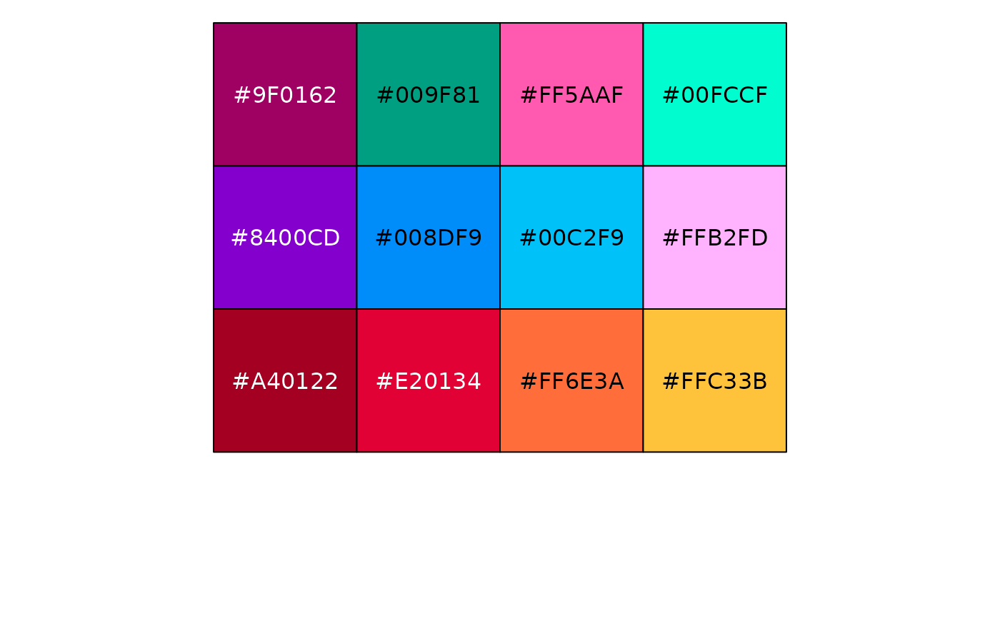

Returns n colours from the package's colour-blind-friendly sets: the 8-, 12- or
15-colour set that fits (interpolated beyond 15). Use it to colour metadata levels
consistently across plots. A single, namespaced entry point replaces the older
colorPalette_08 / colorPalette_12 / colorPalette_15 objects.
Examples
color_palette(5)
#> [1] "#2271B2" "#3DB7E9" "#F748A5" "#359B73" "#D55E00"
if (requireNamespace("scales", quietly = TRUE)) scales::show_col(color_palette(12))
